About Me
ประวัติการศึกษา: กำลังศึกษาปริญญาตรี คณะสถาปัตยกรรมศาสตร์และการออกแบบ
สาขาเทคโนโลยีมีเดีย เอกดิจิทัล มหาวิทยาลัยเทคโนโลยีพระจอมเกล้าธนบุรี ปี 4
ในหลักสูตรนี้ ผมได้เรียนรู้การออกแบบและพัฒนาสื่อดิจิทัลหลากหลายรูปแบบ ทั้งงานด้าน UX/UI, Interactive Media,
Immersive Technology (VR/AR/MR), การพัฒนาเกมและแอปพลิเคชัน, Motion Graphics, การผลิตคอนเทนต์มัลติมีเดีย
ตลอดจนการใช้เทคโนโลยีเพื่อสร้างสรรค์ประสบการณ์ดิจิทัลเชิงโต้ตอบ
Projects
All
Web
AI
Game
AR/VR/MR
Hardware/IoT
Mobile
Design/Motion
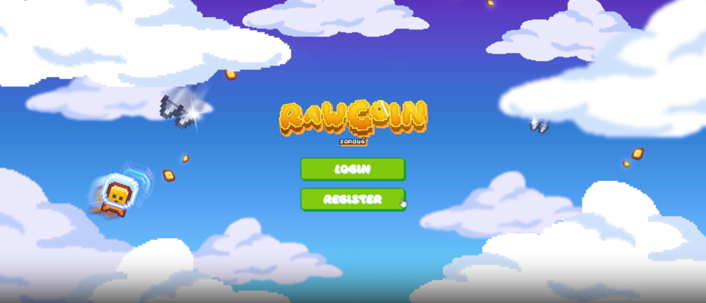
ดูรายละเอียด
RawCoin Web Game
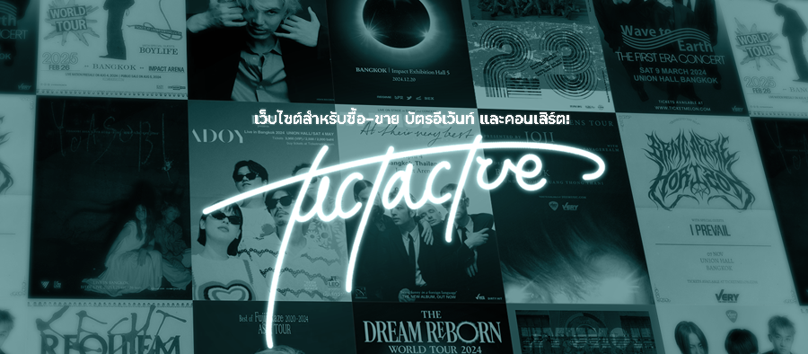
ดูรายละเอียด
TictTacToe — เว็บจองตั๋วคอนเสิร์ต
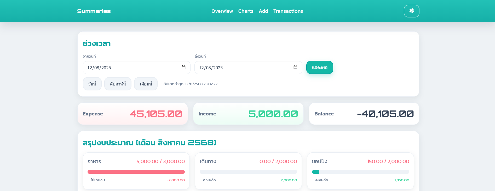
ดูรายละเอียด
Money — Realtime Tracker
ดูรายละเอียด
CoffeeFarm — Chiang Rai
ดูรายละเอียด
Smart Farm — IoT Dashboard
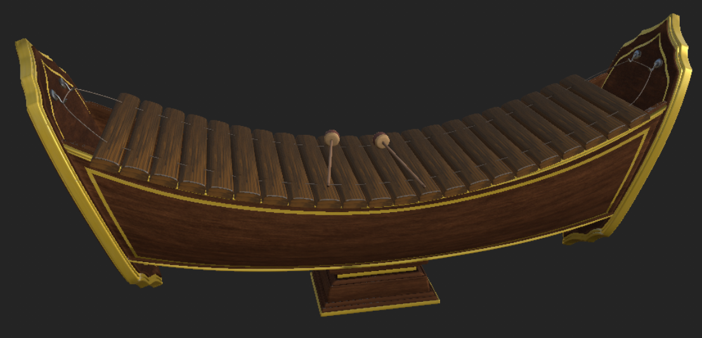
ดูรายละเอียด
MR Ranad Ek
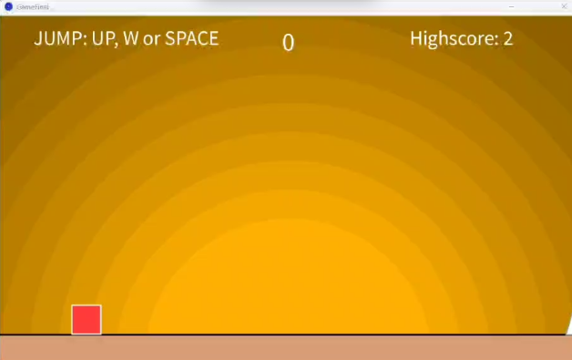
ดูรายละเอียด
Jump & Dodge
ดูรายละเอียด
Saku — Motion Graphic
ดูรายละเอียด
SchoolFit (AR Fitness)
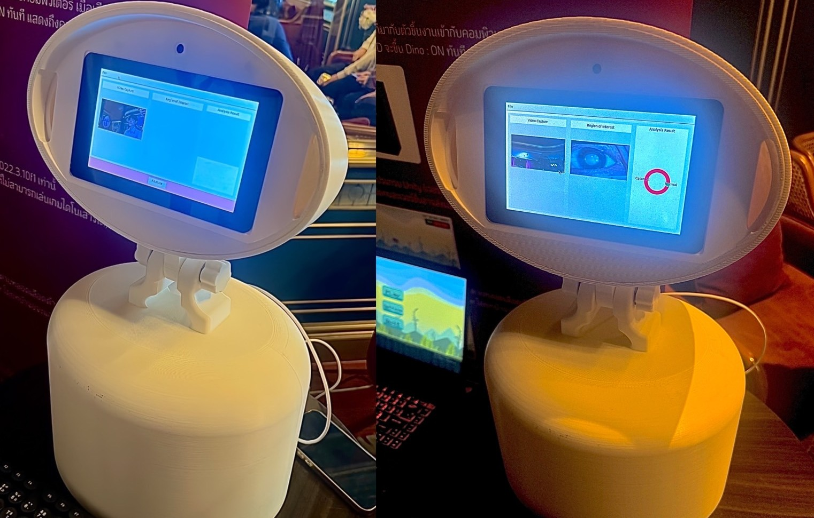
ดูรายละเอียด
หุ่นยนต์ตรวจต้อกระจก (AI)
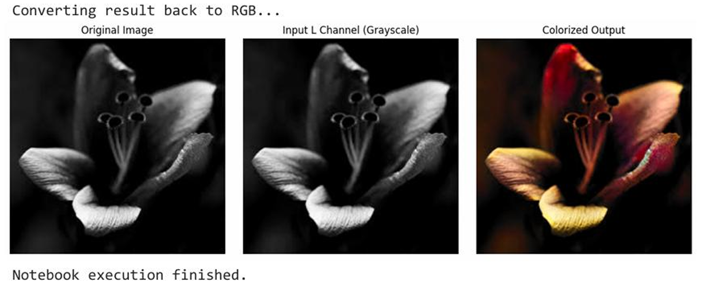
ดูรายละเอียด
AI Image Colorizer (GAN)
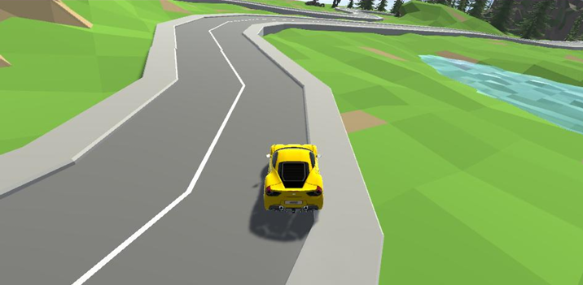
ดูรายละเอียด
AI & Prompt Racing
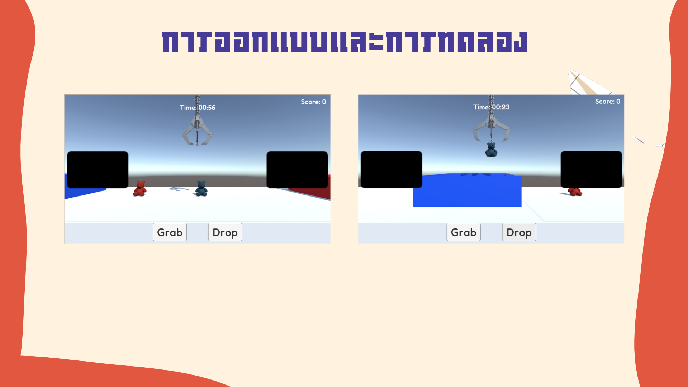
ดูรายละเอียด
BCI Claw Machine — SSVEP
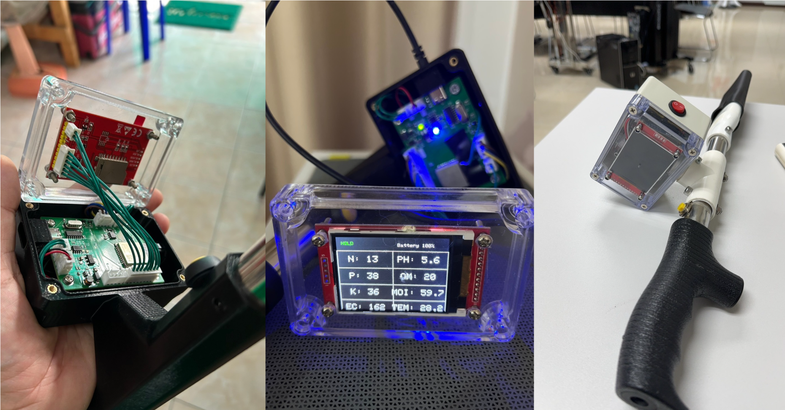
ดูรายละเอียด
เครื่องวัดค่าดิน (NPK/PH/EC)
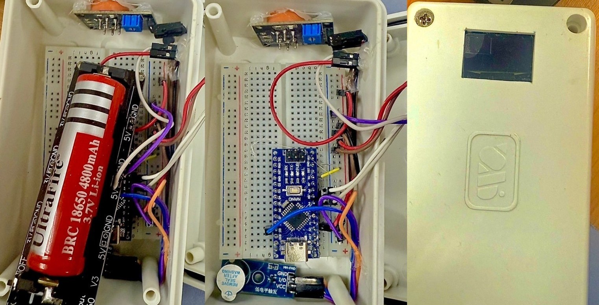
ดูรายละเอียด
เครื่องเป่าแอลกอฮอล์
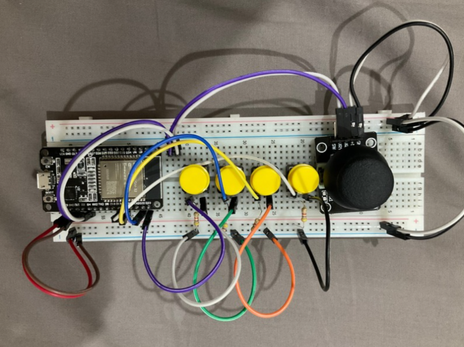
ดูรายละเอียด
DIY Bluetooth Gamepad (ESP32)
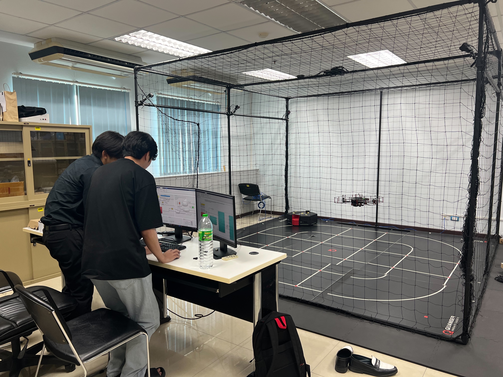
ดูรายละเอียด
Drone Training
AI Image Colorizer
ภาพต้นฉบับ (ขาว-ดำ)
ลากรูปมาวางที่นี่ หรือคลิก
รองรับ .jpg .png .webp
ผลลัพธ์
.jpg)
.png)
.png)
.png)
.png)
.png)
.png)
.png)
.png)